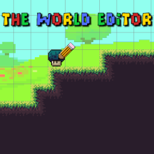
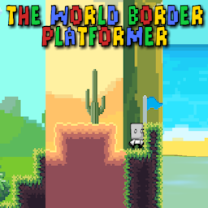
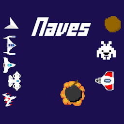

Atrás

Volver a la página anterior.
The world editor
Crea, comparte y juega niveles de plataformas únicos en The World Editor: un editor de mundos donde la creatividad de la comunidad no tiene límites.
The world border platformer
Un juego de plataformas en el cual debes de conseguir todos los relojes para completar el juego.
Naves
Un sencillo juego de naves.